Submitted to IEEE Trans. (Full version) and ICRA (Conf version)
Learning in robotic games is constrained not only by strategic information but also by what the body can still execute. We study this coupling in a hierarchical humanoid–quadruped penalty system in which game-level self-play policies command fixed soccer whole-body controllers (S-WBCs). The humanoid shooting skill is initialized from self-collected motion-capture data, whereas the quadruped saving skill is learned by reinforcement learning. We introduce dynamics-induced commitment mapping (DIC-Map), a body-grounded analysis that estimates continuation capability, identifies the first persistent loss of a terminal alternative, and tests whether the remaining interaction admits a reduced zero-sum game. For symmetric terminal alternatives, the reduced game yields a closed-form bound on optimal strategy concentration determined by the responder's value of deferring. We further show that, when the responder acts through an estimator, equal response values eliminate the direct terminal-allocation gradient and leave an estimator-mediated first-order learning channel. Experiments locate commitment about 0.29 s before contact, and changing only ball speed shifts deferral coverage. Across four responder policies, replacing the estimator raises save rate from 0.240 to 0.472, whereas a comparable gain in read accuracy obtained by waiting raises it only to 0.246. Posterior analysis is used for the equilibrium comparison because the available coverage terms are observational proxies.
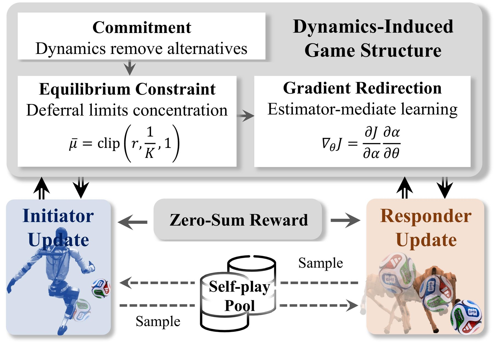
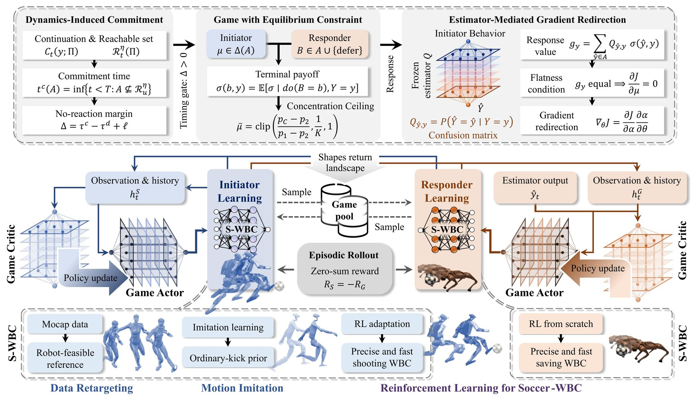
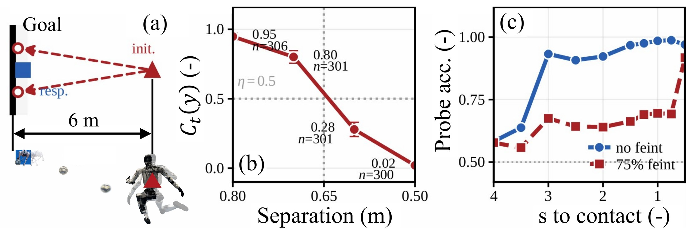
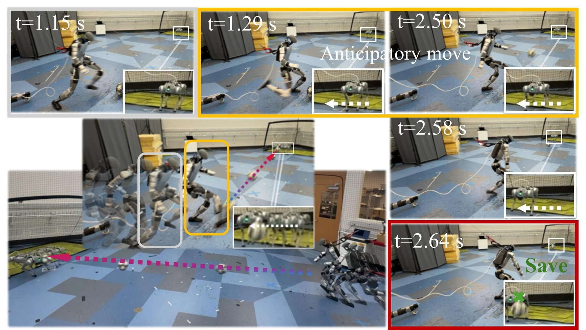
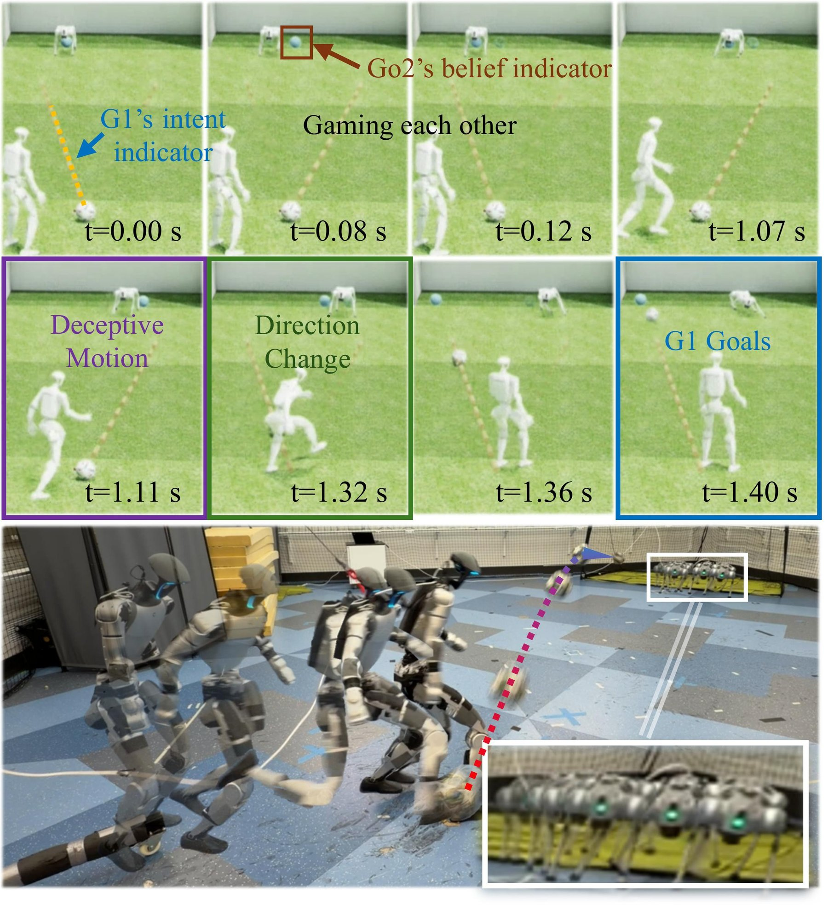
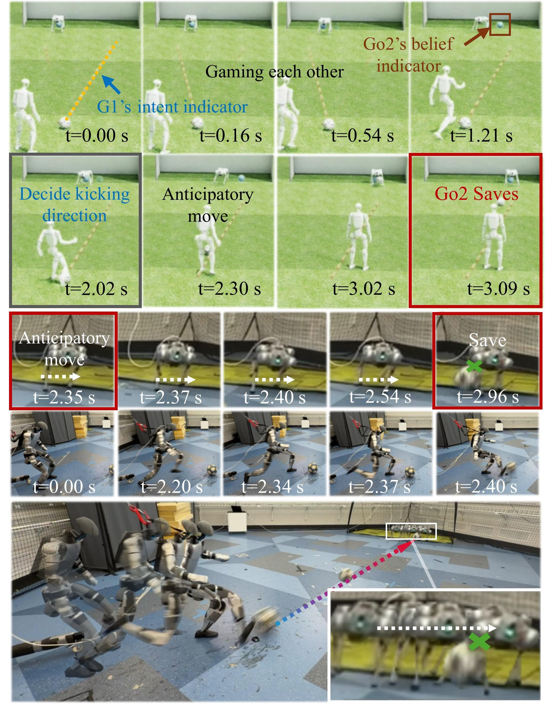
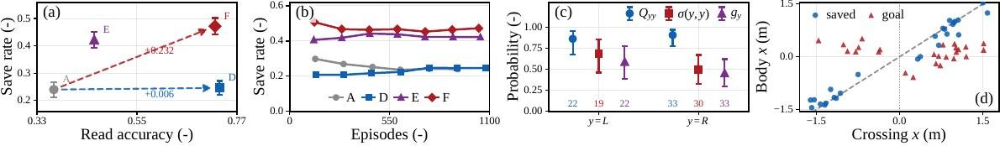
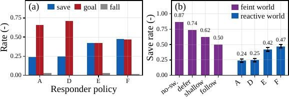
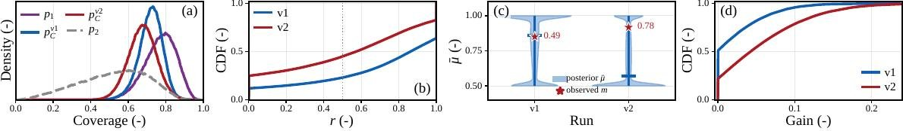
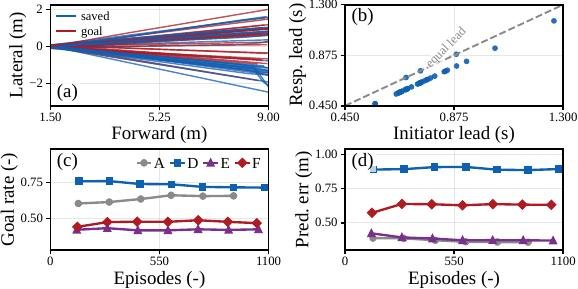
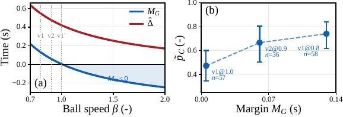
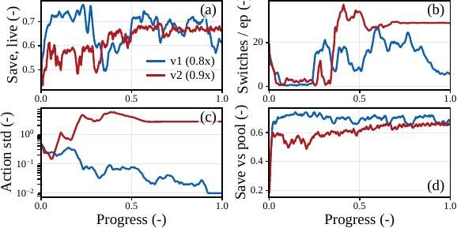
@article{geng2026dynamics,
title={Dynamics-Induced Commitment in Learning-Based Robotic Penalty Kicks},
author={Geng, Ruize and Zhang, Hao E. and Li, Yisen and Wang, Yikai and Tseng, H. Eric and Zhao, Ding},
journal={arXiv preprint arXiv:2609.21100},
year={2026}
}